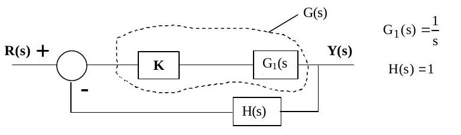
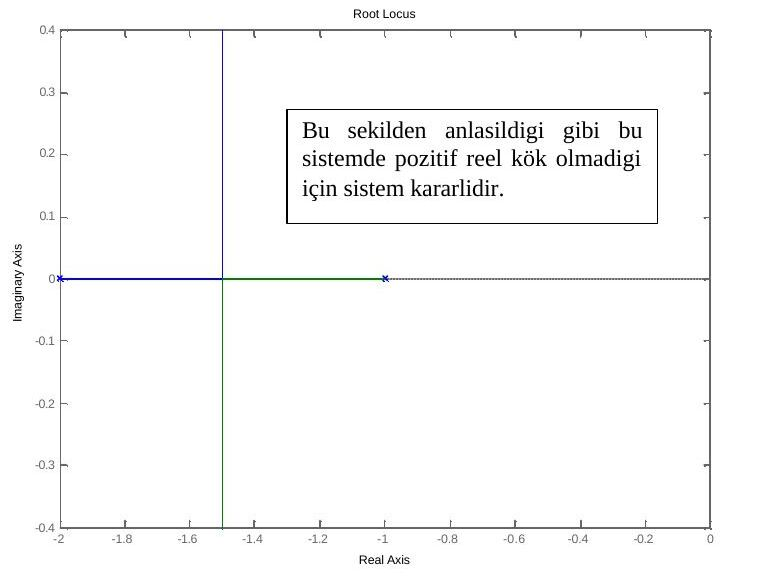

· EEM322
EEM322 Denetim Sistemleri: Root-Locus (Kök Yer Eğrisi) Metodu – "ders5" Notu (2005, yazarı belirsiz)
EEM322 – Denetim Sistemleri · 31.03.2005 · 16.10.2026
Bu yazı, EEM322 Denetim Sistemleri klasöründe "Root_locus.pdf" adıyla saklanan 6 sayfalık üçüncü taraf bir ders notudur. Notun üzerinde yazar ya da kurum adı yok; PDF özelliklerine göre Word'de "ders5.doc" adıyla hazırlanmış ve 31 Mart 2005'te PDF'e çevrilmiş (dosya sahibi olarak yalnızca "zeki" kullanıcı adı görünüyor). Kaynağı belirlenemeyen bu not, Türkçe karakterleri bozuk olduğu için imlası düzeltilerek yazıya aktarıldı; orijinal PDF yazının sonunda indirilebilir.
Bu içerik üçüncü taraf bir kaynağa aittir; arşiv ve nostalji amacıyla kaynak belirtilerek paylaşılmıştır. Hak sahibinin talebi hâlinde kaldırılır.
Root-locus metodu
Değişken kazançlı bir kontrol sistemi tasarlarken dikkat edilecek temel nokta, kullandığımız kazanç değerlerinin sistemi kararlı bölgede tutmasıdır. Root locus çizimi kararsız bölgeleri (karmaşık düzlemde köklerin düşey eksenin sağ tarafı), aşırı sönümlü sistemleri ve titreşimli sistemleri belirlemede oldukça kullanışlıdır. Yöntem biraz zaman alıcıdır, fakat elde edilen sonuçlar bir kontrol sistemini tasarlarken oldukça önemlidir.

G₁(s) = 1/s ve H(s) = 1 olan bu sistemin transfer fonksiyonu Mason formülü ile:
G_s(s) = G(s)/(1 + G(s)H(s)) = (K/s)/(1 + (K/s)·1) = K/(s + K)
Değişen K değerleri için transfer fonksiyonunun paydasının kökleri bulunur ve karmaşık düzlemde gösterilir (K kazancı normalde 0 ile +∞ arasında değer alır). D(s) = s + K, s + K = 0:
| K | Kök |
|---|---|
| 0 | 0 |
| 1 | −1 |
| 2 | −2 |
| 3 | −3 |
K = 0'da kök orijindedir; K → ∞ iken kök reel eksen boyunca sola, −∞'a gider.
Bir sistemin kararlılığını araştırmak için transfer fonksiyonunun paydasına bakmak yeterlidir. Negatif ve birim geri beslemeli bir kontrol sistemi için genel ifade G_s(s) = G(s)/(1 + G(s)H(s))'dir. Sistem cevabı paydanın bir fonksiyonudur ve paydanın kökleriyle belirlenir: 1 + G(s)H(s) = 0. G(s)H(s) sıfırlar (zeros) ve kutuplar (poles) cinsinden şöyle de yazılabilir:
G(s)H(s) = K(s + z₀)(s + z₁)…(s + z_m) / [(s + p₀)(s + p₁)…(s + p_n)]
Örnek: G(s) = K/(s² + 3s + 2), H(s) = 1
Karakteristik denklem:
1 + K/(s² + 3s + 2) · 1 = 0 → s² + 3s + 2 + K = 0 s₁,₂ = [−3 ± √(9 − 4(2 + K))]/2 = −1.5 ± √(1 − 4K)/2
| K | Kökler |
|---|---|
| 0 | −1, −2 |
| 1 | −1.5000 ± 0.8660i |
| … | … |
| 100 | −1.5000 ± 9.9875i |
clc;clear;
pay=[1];
payda=[1,3,2];
rlocus(pay,payda)
Şekilden anlaşıldığı gibi bu sistemde pozitif reel kısımlı kök olmadığı için sistem kararlıdır.
Root locus çiziminin temel kuralları
- Kontrol sistemine ait karakteristik denklem yazılır: 1 + G(s)H(s) = 1 + K·(s + z₁)(s + z₂)…(s + z_m)/[(s + p₁)(s + p₂)…(s + p_n)] = 0.
- Kutuplar ve sıfırlar sayılır. (n − m) farkı kadar sonsuza giden root locus çizgisi olacaktır.
- Reel eksen üzerindeki kökler işaretlenir.
- Sonsuza giden kollar için asimptot açıları β(k) = ±180°(2k + 1)/(n − m), k = 0, 1, …, (n − m − 1) ile bulunur; ardından asimptotların reel ekseni kestiği nokta σ hesaplanır ve asimptotlar çizilir.
- Ayrılma (breakaway) ve birleşme (break-in) noktaları bulunur. Ayrılma noktaları reel eksende iki kutup arasında, birleşme noktaları sıfırlar arasında bulunur. A = (s + p₁)(s + p₂)…(s + p_n), B = (s + z₁)(s + z₂)…(s + z_m) için şu denklem çözülür: (dA/ds)·B − A·(dB/ds) = 0.
- Kök eğrilerinin sanal ekseni kestiği yerler bulunur: s yerine iω konur ve 1 + K(iω + z₁)…(iω + z_m)/[(iω + p₁)…(iω + p_n)] = 0 ifadesi frekanslar için çözülür.
Notta asimptotların reel ekseni kestiği nokta σ = (p₁ + p₂ + … + p_n)(z₁ + z₂ + … + z_m)/(n − m) diye yazılmış.
Not: Bu formül hatalı yazılmış. Kutup ve sıfırların toplamları çarpılmaz, birbirinden çıkarılır: σ = [Σ(kutuplar) − Σ(sıfırlar)]/(n − m). Buradaki gösterimle kutuplar −p_i, sıfırlar −z_i olduğundan σ = [(−p₁ − … − p_n) − (−z₁ − … − z_m)]/(n − m) olur.
Kuralların örneğe uygulanması: G(s) = K/(s² + 3s + 2)
Adım 1: D(s) = 1 + G(s)H(s) = 1 + K/(s² + 3s + 2) = 1 + K·1/[(s + 1)(s + 2)].
Adım 2: Sonsuza giden yer eğrisi sayısı: m = 0, n = 2, n − m = 2 eğri sonsuza gider.
Adım 3: Kökler (kutuplar, −1 ve −2) karmaşık düzlemde gösterilir.
Adım 4: Asimptot açıları ve reel ekseni kesim noktası:
β(k) = 180°(2k + 1)/2, k = 0, 1 → β(0) = 90°, β(1) = 270°
Notta kesim noktası σ = (−1 − 2)(0)/2 = 0 olarak hesaplanmış.
Not: Doğru formülle σ = [(−1) + (−2) − 0]/2 = −1,5 bulunur. Asimptotlar orijinden değil −1,5'ten geçen düşey doğrulardır; bu, yukarıdaki MATLAB çizimindeki ve Adım 5'teki sonuçla da uyumludur (kollar −1,5'te reel eksenden ayrılıp düşey olarak gider).
Adım 5: Ayrılma noktası: A = 1, B = s² + 3s + 2; dA/ds = 0, dB/ds = 2s + 3.
A·(dB/ds) − B·(dA/ds) = 0 → 1·(2s + 3) − (s² + 3s + 2)·0 = 0 → 2s + 3 = 0 → s = −1.5
Adım 6: Kök yer eğrileri sanal ekseni kesmediği için sistemin kararlı olduğu sonucuna varılabilir; uygulama amacıyla sanal eksen kesişimi hesabı:
s² + 3s + 2 + K = 0, s = iω → −ω² + 3iω + 2 + K = 0 → ω² − 3iω − 2 − K = 0 ω = [3i ± √((−3i)² − 4(−2 − K))]/2 = [3i ± √(−9 + 8 + 4K)]/2 = [3i ± √(4K − 1)]/2
Bu sonuç frekansın sanal bir değere sahip olduğunu gösterir; yani sanal ekseni kesen bir (gerçel) frekans yoktur.